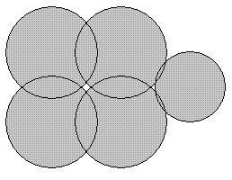
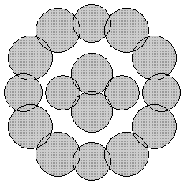

| Source file: | blots.{c, cpp, java} |
| Input file: | blots.in |
| Output file: | blots.out |
|  |
 |
|
| Figure 1: 1 White Region |
Figure
2: 3 White Regions |
Figure
3: 4 White Regions |
Drops of dark ink can fall on a white piece of paper creating a number of round ink blots. Three examples are shown above. The blots can create multiple distinct white regions. In the first figure, there is just one white region. In the second figure there is the outer white region plus a small white region bounded by the left four blots and an even smaller white region bounded by the right three blots. In the third figure, there are four white regions, one on the very outside, one inside the outer ring of blots and outside the four blots in the middle, and two tiny ones each formed between three of the four inner blots.
Two points are in the same white region if a path can be drawn between them that only passes through white points. Your problem is to count the number of white regions given the centers and radii of the blots.
Math Formulas: If circles
C1 with center (x1, y1) and radius r1, and
C2 with center (x2, y2) and radius r2
intersect in exactly two distinct points, let
d equal the distance between the centers of C1 and C2,
A = atan2(y2-y1, x2-x1), and
B = acos((r12 + d2 - r22)/(2*r1*d));
then the intersection points on C1 are at angles A+B and A-B radians counterclockwise from the ray extending to the right from the center of C1. The function atan2 is the inverse tangent function with two arguments, and acos is the inverse cosine function, both available in the math libraries of C, C++, and Java.
Input: There are from one to 15 data sets, followed by a final line containing only 0. A data set starts with a line containing a single positive integer n, which is no more than 100. It is the number of blots in the dataset. Then 3n positive integers follow, with a single blank or a newline separating them. Each group of three give the data for the circular boundary of one blot: x and y coordinate of the center of the blot and its radius, in that order. Each of these numbers will be no larger than 1,000,000. All blots lie entirely on a piece of paper, and no blot touches any edge of the paper. No two circles in a dataset will be identical. Given any two distinct circles, they will either intersect at exactly two distinct points or not intersect at all. If two circles in the input intersect, then they overlap by at least one unit. More precisely, if they have radii r1 and r2, where r1 ≤ r2, and if d is the distance between their centers, then
r2 - r1 + 1 ≤ d ≤ r1 + r2 - 1.
Three or more circles will never intersect at the same point. If C is a circle in the input that intersects at least one other input circle, and p and q are any of the intersection points of C with any of the other input circles, with p distinct from q, then p and q will be separated on C by at least 0.001 radians of arc. The restrictions on radii and angles ensure that standard double-precision arithmetic is sufficient for the calculations suggested above.
The sample input below corresponds to the figures above, though the scale is different in each figure.
Output: The output contains one line for each data set. The line contains only the number of white regions for the dataset, which is never more than 200.
Warning: Brute force raster methods of solving this problem will take up too much memory and be too slow.
| Example input: | Example output: |
4 |
1 |
Last modified on October 31, 2004 at 4:21 PM.